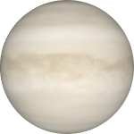

Венера
Венера это вторая по отдаленности планета в Солнечной
системе. Из всех планет, только у неё и у Урана,
ретроградное движение (движение вокруг Солнца,
обратно движению других планет, так что за один
венерианский год восход и заход Солнца происходит
всего два раза). День на Венере длится 224,7 Земных
дня, это примерно 7 земных месяцев.Венера — самая
жаркая планета в Солнечной системе - температура
примерно 500°С.